共同坐标下的信息、隐藏预测、潜变量恢复与非线性条件重拟合
2026-10-21
新数值证据：SPATIAL-INFORMATION-v1，20261021_v1，配置与源码快照在运行目录内冻结。
既有数值证据：shared_driver_spatial/20261020_measured_v2和20261020_synthetic_v1，保留原校准、选择及失败身份；本报告新重采样使用2000次而非旧1000次。
所有读取限明确保留的公开结果与新合成；没有读取原始数据、扩大样本或访问受保护数据。
verification.json独立重放通过。新增报告图仅重排冻结数值，未重新拟合。
354个任务全部进入终态：240个新增合成拟合均成功，实测局部信息70/72可用，条件profile40/42成功；2个原拟合失败和2个新增预算失败均保留。
独立双源合成中，完整面板free-K2隐藏NRMSE为0.029359，严格tied为0.661569；相同双源时自由化反而略差（0.025845 vs 0.023847）。新增动态必须由真实异质性和隐藏预测支持。
K2从1个可见Hb供体增至3个后，最小数据奇异值中位数0.036144→0.800666；两者都42/42满秩。局部满秩不等于数值稳定或生理参数可恢复。
独立双源真实读出的原始driver NRMSE为0.277253，但参考中心化后仅0.015493，绝对DC误差0.006546：预测与动态形状可以很好，绝对潜变量基线仍不准确。
旧公开实测没有获得相应的动态/几何收益，且未超过同输入ridge。条件profile显示可见目标下降不保证隐藏误差改善；本套件不提供真实τ、κ恢复或脑源定位证据。
本报告区分四个不同问题：输出是否贴近观测、隐藏观测能否预测、潜在驱动和状态是否接近生成真值、参数是否由数据而非先验决定。它们使用不同的评分对象，不能互相替代。实测数据没有本研究所需的个体生理真值；实测部分只能报告补全、稳定性和条件敏感性，参数恢复必须由已知生成真值的合成实验评价。
本轮是解释性开发研究。合成生成器是受控的模型世界；既有 Single-Trial 面板是已研究的公开开发人群，不是新的确认性或受保护测试集。生成种子、被试、记录、窗口和通道的层级分别保留；同一生成样本的多种拟合条件不充当独立样本。没有进行受保护数据访问。
增加通道回答“同一个动态结构是否获得更多独立约束”；正确几何回答“传感器与潜变量的对应是否正确”；K1→K2 回答“是否需要解除两个核心的驱动和初态相等约束”。三种操作不能合并成一个模型更复杂的优势。隐藏预测改善也不自动说明 τ、κ 或脑源位置已经恢复。
数值计算复用 src/inference/shared_driver_reconstruction.py 的 nonlinear_driver_forward 和同一守恒 Balloon 核心。拟合的驱动 r(t) 是外加的分段常值输入；这里不把原 SSM 接口的驱动衰减方程当作已执行的驱动动力学。每个核心独立传播五个血管状态 s、f、v、p、q，初态为 s0、f0、v0、p0、q0。后四项通过对数坐标保持正值；非法中间 RK4 状态必须拒绝，不能裁剪成合法轨迹。
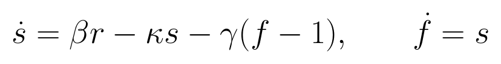
r 为声明坐标中的驱动；β 为固定神经血管增益；κ 为信号衰减参数，γ 为固定血流反馈系数；f 是相对基线血流，s 为其时间导数。κ 的单位为每秒；本报告的 κ 恢复是在其余固定常数和驱动尺度成立时的条件恢复。
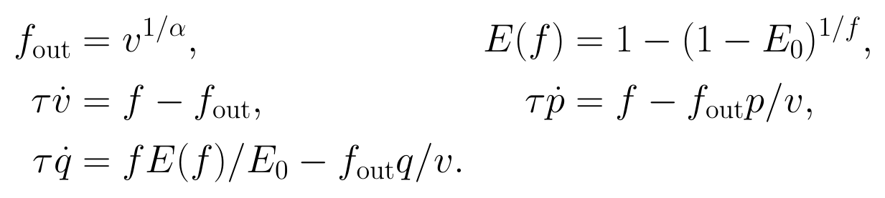
τ 是以秒计的模型转运时间常数，α 和 E0 固定；v、p、q 是相对基线的血容量、总血红蛋白和脱氧血红蛋白状态。这里使用当前代码的 inlet-balance p 方程，不能把别处形式不同的 p 方程或 BOLD 读出拼入解释。τ 和 κ 不等于所有生理机制的充分参数。
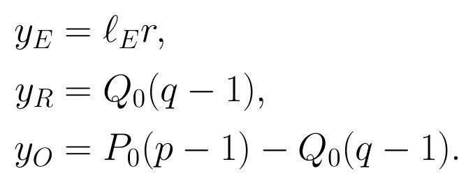
P0、Q0 和 EEG loading 固定，定义潜变量的单位和尺度规范。HbO+HbR=P0(p-1)。EEG 读出是项目的功率代理模型，不是电位 lead field；固定尺度下的合成真值不能直接解释为个体绝对代谢标定。
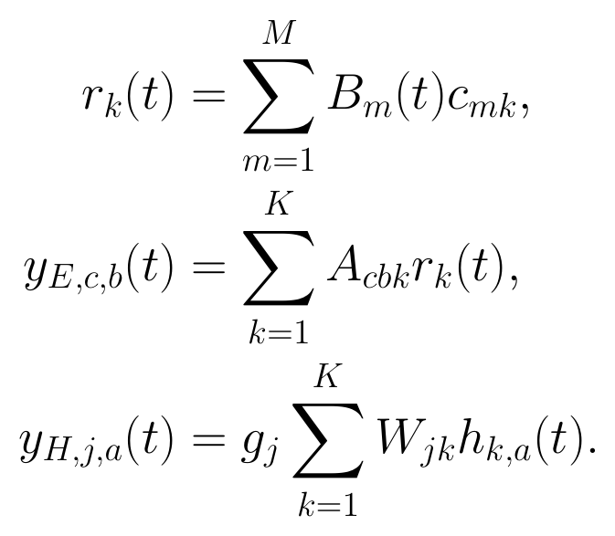
K 为一或二；每个核心都有自己的驱动与五个初态。a 为 HbO 或 HbR；W 非负且每行和为一，g 为固定正增益。A 是空间核乘以频带系数形成的 EEG 读出。不能先把 r₁、r₂ 平均后送入一个核心来冒充两套独立非线性状态。时间参考算子在读出之后施加。
当前局部结构是模板传感器邻域的条件模型：没有额外 Hb 时间基底、自由网络边或逐通道独立血管状态。多个 Hb 通道在 K1 下共享一条核心轨迹，只能提供额外约束或不同读出，不能独立产生不同峰形。空间核来自传感器邻域，不是个体皮层定位。
同一最大面板先冻结尺度、读出和时间参考，较少通道只切片同一信号、同一 Jacobian 行与同一噪声实现。不能为每个子面板重新拟合归一化、核宽或列范数再比较奇异值。比较不同通道数时，潜变量列集合必须相同；K1 与 K2 的未知数维度不同，需要并列列出维度，不能只比较秩的绝对值。
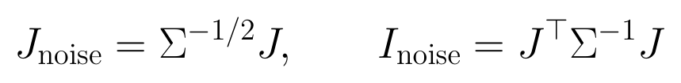
只有明确且适用的噪声协方差才允许把此量作为局部信息近似。相关通道、基线相减引入的时间相关、共同干扰和零空间都必须考虑；若仅使用对角标准差，应标为对角噪声假设下的敏感性，而非校准统计精度。增加重复通道不会凭空增加独立信息。
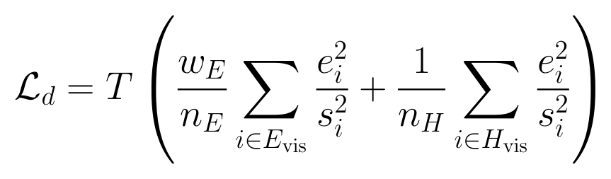
n_E、n_H 是可见标量数，T 是时间点数，s 来自冻结训练尺度。增加同类通道时总模态权重保持近似固定。这是避免通道数改变先验相对权重的工程设计，却不是“更多独立样本的似然自动累加”。本套件分别呈现原始坐标、训练SD标准化数据Jacobian和实际目标Jacobian；没有把训练SD当作已估计噪声协方差。
真实、sham 和一般读出对照使用相同生成信号与评分目标，只改变拟合器所用观测映射；这样比较的是映射失配。若同时变换信号和读出，仅仅是换坐标，不能检验几何价值。保留矩阵秩和奇异值可以排除部分容量或数值尺度差异，但不保证完整非线性 Jacobian 的条件数相等。目标通道是否保持原读出必须逐臂明示。
K2 的严格限制对照保持同一个 K2 读出，将两条驱动及两套初态强制相同。其等价单核 EEG loading 为两列之和，Hb 权重为一，驱动曲率、初态和血流先验权重均乘二。这个对照检验解除相等约束的增量。重新校准一个单独 K1 则改变了读出家族，不能单独解释成纯动态维数收益。
K2 均匀读出可能令两列相同而使空间秩塌缩；这种情况只作不可分辨反例，不作等容量主基线。两条生成驱动相同是时间激励的退化，读出矩阵退化是空间观测的退化，二者须分别报告。
本轮一般读出对照对 EEG loading 左乘固定 Householder 正交映射，对 Hb loading 作所有行的置换，允许隐藏目标的算子行改变；信号数组与目标身份保持不变。该操作精确保留每个完整 loading 矩阵的秩、奇异值与 Frobenius 范数，并保持 Hb 非负凸权重，但切片后的子面板谱不必相同。sham 沿用旧设计并保留目标 Hb 行。两者是强度不同的算子失配，不能将其所有差异都归因于“生理几何”。
新增合成包含相同双源、近似相同双源和独立双源；近似相同条件将第二条驱动设为0.9倍第一条加0.1倍原独立第二条，混合后不再调整RMS。新增合成固定τ=2 s、κ=0.64 /s和静息初态；这些参数不参与恢复评分。8 个评价种子与8个尺度训练种子分开；真实读出已知并冻结，不在评价信号上重新校准。每个条件比较 H2/E12、H4/E6、H4/E12 三个嵌套面板，以及 free-K2 与严格 tied-K2。H 的数目包含隐藏目标对，因此 H2 只有一个可见 Hb 供体，H4 有三个。
新增非线性拟合共240个单元：3个生成场景×8个评价种子×每场景种子的10个条件。真实读出包含3个面板×free/tied两种模型；sham与generic各只在完整H4/E12面板比较free/tied。因此这不是所有因子的完全交叉，不能把小面板上的几何效应当作已检验。另有72个保留实测局部信息单元和42个条件profile节点，总计划354个任务，完整终态与成功数量见下文。
整对隐藏将目标 HbO/HbR 的全部时间包括参考段移出输入；目标真值仅用于评分。中心隐藏保留目标两侧上下文，但被屏蔽区间不能经插值或当前窗归一化泄漏。full 条件重建允许目标可见，只用于拟合诊断。所有任务使用完整 EEG 时间窗，属于离线补全，不是在线预报。
同输入基线包括训练模板、仅 Hb 供体空间 ridge、EEG 加 Hb 供体 joint ridge；中心隐藏可另有目标自身上下文插值。比较模型时匹配输入可见范围和评分支持。不能把 full 模式下自身插值的零误差当作有意义的隐藏预测能力。
主评价是隐藏 HbO/HbR 的冻结训练尺度 NRMSE，分别报告两色团和联合评分。对合成数据同时报告驱动和状态真值误差；对实测报告数据项、条件 profile 与失败，不能把固定 τ、κ 的零变化写成恢复。更多通道不是更多独立被试。
本套件354个计划任务全部进入终态：350 completed、2 failed_numerical、2 unavailable_source_fit_failure。72个保留实测局部信息任务完成70个，另外2个原K2拟合已失败，未补造线性化点；42个新增条件profile有40个达到收敛和积分要求；240个新增合成拟合全部成功。两个新失败均为subject_21的τ倍数0.7与0.85，在180次评估预算内未达到要求；它们不是新的生理负结果。
| 类别 | 计划 | 成功/可用 | 未成功原因 |
|---|---|---|---|
| 保留实测局部信息 | 72 | 70 | 2个原拟合失败 |
| 实测条件profile | 42 | 40 | 2个评估预算耗尽 |
| 新增合成拟合 | 240 | 240 | 无 |
| 合计 | 354 | 350 | 2数值失败+2原source不可用 |
成功与任务终态是不同概念；实测面板为6个被试、36个相关窗口。
来源：summary.json; plan.json
独立核验从保留系数与初态重新前向传播，复核240个合成接受解和42个profile记录，未重新优化或重试失败。目标分项最大绝对差2.27×10^-13，总目标差1.71×10^-13；隐藏NMSE、被试/种子汇总、配对收益及bootstrap区间重算差为零；读出奇异值差不超过4.44×10^-16。重放失败节点的有限候选只检查可复现性，不把它升级为收敛最优解。
新运行的配置、任务JSON、原始比较表及verification.json是数值证据来源；报告图片为这些冻结数值的沟通导出。
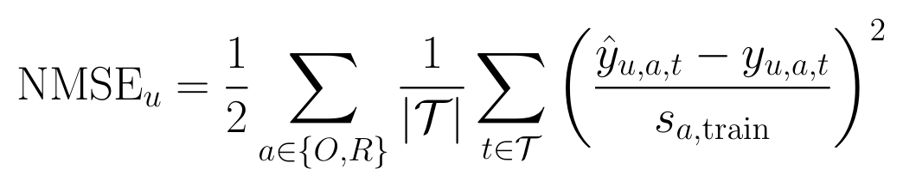
评分支持为第20到119个采样位置，即参考段后的固定25秒；分母为独立训练生成数据或原保留训练坐标的SD，非当前窗口SD、目标RMS或噪声SD。两色团先分别对时间求均方，再等权平均。新合成主评分目标包含生成噪声；无噪声目标误差另留在任务记录。
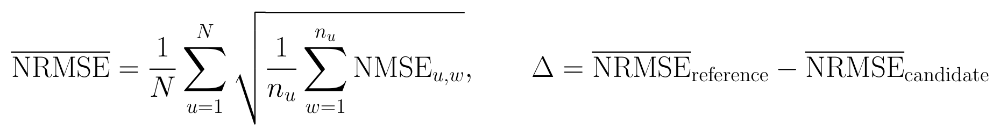
实测的u是被试；新增合成的u是生成种子。失败若属于可用拟合任务则按NMSE=100保留；不可用配对不以惩罚制造收益。Δ>0支持候选。描述性95%区间由2000次独立单元配对重采样获得，条件和选择规则冻结，没有宣称总体确认或多重比较后的显著性。
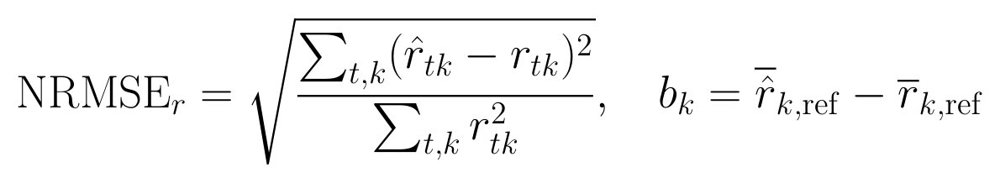
参考均值取前20点。形状NRMSE先分别减去预测和真值各自的参考均值，再用参考中心化真值RMS归一；没有再调幅、翻转符号或交换核心身份。报告同时保留原始误差、形状误差和各核心绝对b的均值。形状正确不代表绝对基线正确。
状态数组另报告r、s、f、v、p、q的原始及参考中心化误差。按完整真值RMS归一的f、v、p、q误差包含接近1的静息偏移，较小并不自动说明动态变化量恢复；因此主结论不使用这种归一值单独宣称潜状态准确。
在同一个保留拟合点、相同未知数列与冻结训练尺度下，K2的H2/E12与H4/E12都为42/42数值满秩；然而最小数据奇异值的窗口中位数从0.036144升至0.800666，条件数中位数从18142.57降至1301.66。通道增加主要提高原来很弱的组合方向，而不是使秩从不足突然变足。K1也全为21/21，最小奇异值从1.085460升至1.630489。
| 核心 | 可见面板含目标 | 可用窗口 | 数据秩/未知数 | 最小奇异值中位数 | τ/κ投影信息最小特征值 |
|---|---|---|---|---|---|
| K1 | H2_E12 | 36/36 | 21/21 | 1.085460 | 0.336092 |
| K1 | H4_E6 | 36/36 | 21/21 | 1.607123 | 0.431073 |
| K1 | H4_E12 | 36/36 | 21/21 | 1.630489 | 0.497525 |
| K2 | H2_E12 | 34/36 | 42/42 | 0.036144 | 0.051066 |
| K2 | H4_E6 | 34/36 | 42/42 | 0.785410 | 0.113329 |
| K2 | H4_E12 | 34/36 | 42/42 | 0.800666 | 0.146655 |
训练SD尺度、独立行假设下的局部敏感性；H2实际仅1个可见Hb供体，H4有3个。所有值是窗口描述性中位数，不把70个可用拟合点当独立被试。最后一列在额外释放logτ/logκ后投影掉所有驱动和初态列。
来源：information_results.json
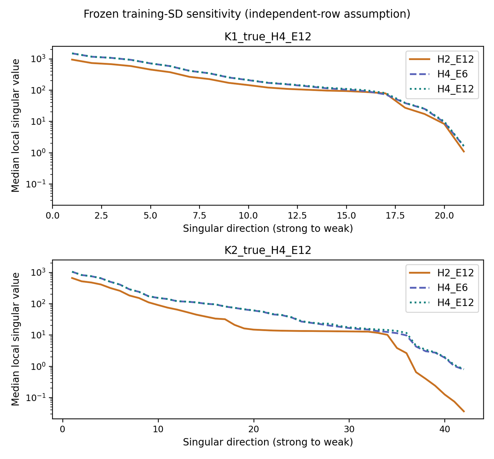
来源：information_results.json; figures/report_figure_manifest.json
把原H2/E12最弱的五个方向固定下来再加入Hb行，K2方向能量比的窗口中位数依次为1994、15013、43494、96356、170534；没有一个因此跨越预定数值秩阈值，因为原来的能量已非零。相反，H4/E6增加到H4/E12后，原最弱方向的能量比中位数仅1.0605。方向能量比是同一扰动方向在新增观测中的响应，不是参数误差下降倍数、解释方差或置信度。
K2完整面板中，将驱动和初态局部补偿投影掉后，τ、κ原有敏感能量的窗口中位保留比例分别仅0.07610、0.004680。也就是说，本轨迹附近约92.4%和99.53%的各参数单独敏感能量可由这些自由度补偿。比例与信息绝对量必须同时看；这不证明全部参数方向严格不可辨识，也不等同于全局可恢复精度。
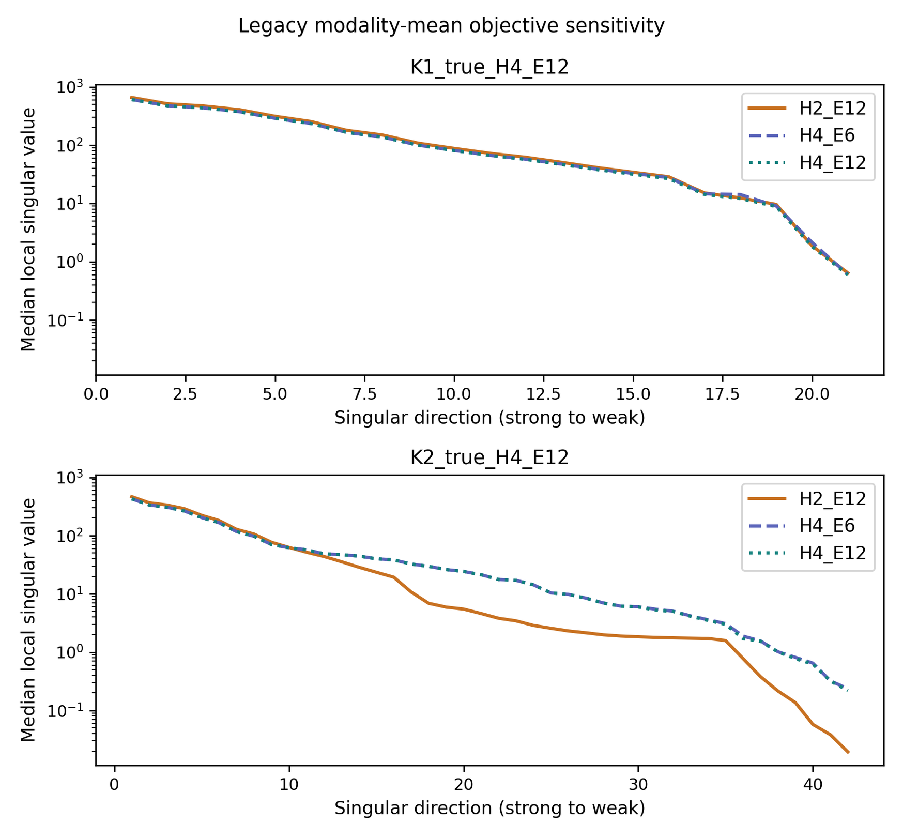
来源：information_results.json
例如K1实际目标的最小奇异值中位数从H2/E12的0.639281变为H4/E12的0.595947，虽然不重新归一的训练SD数据敏感性增加。实际目标的最弱总信息方向中，先验Rayleigh贡献比例中位数为K1的0.97075、K2的0.46591；这些是目标局部曲率分解，不是后验概率。
36个非线性弱方向前向检查均完成。扰动步长1e-4时，新增行上的二阶余项/线性响应RMS中位数3.49e-5、最大7.44e-5；原弱行中位数0.00478、最大0.02859。当步长扩大到0.01，原弱行该比值可达2.86，说明局部弱敏感不能直接外推为大幅参数变化下的观测等价。
| 生成条件 | free-K2 | 严格tied-K2 | Δ= tied-free | 95%描述区间 | 两臂成功数 |
|---|---|---|---|---|---|
| 相同双源 | 0.02585 | 0.02385 | -0.00200 | [-0.00333,-0.00105] | 8/8 + 8/8 |
| 近似相同双源 | 0.02609 | 0.07377 | 0.04768 | [0.03060,0.06523] | 8/8 + 8/8 |
| 独立双源 | 0.02936 | 0.66157 | 0.63221 | [0.46320,0.80940] | 8/8 + 8/8 |
完整H4/E12面板、真实已知读出、固定EEG权重1；数值为种子等权隐藏Hb NRMSE。两臂共享读出，tied先验保留严格限制形式。
来源：synthetic_results.json
独立双源时，解除相等约束将隐藏误差从0.661569降至0.029359，收益0.632210；近似相同双源时仍有0.047680的收益。相同双源时，自由K2反而从0.023847升至0.025845，差值-0.001998。这个反例很重要：没有真实独立变化时，增加可拟合轨迹本身不是优势。结果支持在该生成器、已知读出和固定条件下识别是否需要动态自由度，不支持将任何实测K2都解释为两个生理来源。
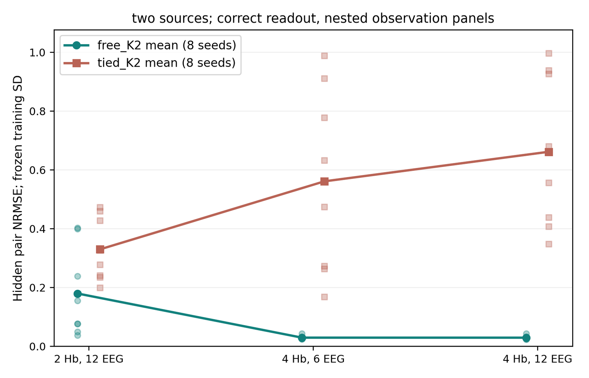
来源：synthetic_results.json; figures/report_figure_manifest.json
独立双源下，free-K2从H2/E12的0.179521降至H4/E12的0.029359；新增两个Hb供体的配对收益为0.150161，区间[0.061856,0.251612]。从H4/E6到H4/E12只从0.029470降至0.029359，收益0.000111，区间[-0.000113,0.000347]。因此当前生成条件支持增加Hb供体对弱方向的实用价值，尚未显示额外六个EEG通道带来明确的隐藏误差收益。
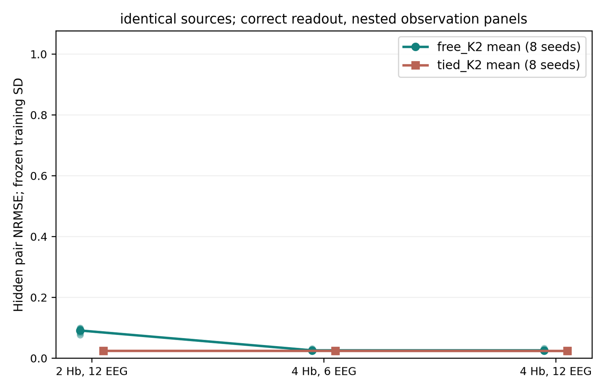
来源：synthetic_results.json
| 生成条件 | 读出 | 隐藏NRMSE | 原始driver NRMSE | 参考中心化driver NRMSE | 绝对DC误差 |
|---|---|---|---|---|---|
| 相同双源 | 真实 | 0.02585 | 0.29159 | 0.02453 | 0.007231 |
| 相同双源 | sham | 0.13349 | 0.34298 | 0.59112 | 0.007257 |
| 相同双源 | 一般等谱失配 | 0.02698 | 0.28353 | 0.04278 | 0.007090 |
| 近似相同双源 | 真实 | 0.02609 | 0.29439 | 0.02602 | 0.006896 |
| 近似相同双源 | sham | 0.14217 | 0.35462 | 0.58174 | 0.006835 |
| 近似相同双源 | 一般等谱失配 | 0.08106 | 0.30433 | 0.04960 | 0.006949 |
| 独立双源 | 真实 | 0.02936 | 0.27725 | 0.01549 | 0.006546 |
| 独立双源 | sham | 0.41429 | 0.62693 | 0.35437 | 0.014067 |
| 独立双源 | 一般等谱失配 | 0.69668 | 0.66430 | 0.08125 | 0.015706 |
均为完整面板free-K2；各格8/8成功。DC为每核心预测与真值前20点均值之差的绝对值，再跨核心、种子平均，单位为固定驱动模型坐标。原始与中心化NRMSE的分母不同，二者不能直接相减作能量分解。
来源：synthetic_results.json
在独立双源、真实读出下，隐藏NRMSE仅0.029359，但原始驱动NRMSE为0.277253。分别减去预测和真值的参考均值后，形状NRMSE降至0.015493，绝对DC误差为0.006546。这个结果不能简化成“驱动完全不准”：动态形状已接近生成真值，主要矛盾在固定坐标的绝对偏移与状态初值补偿。参考中心化是诊断，不是把原始恢复误差抹掉；两项必须同时交付。
相同双源中，真实和一般等谱失配的隐藏误差分别0.025845、0.026983，差异0.001138，区间[-0.001978,0.004022]。独立双源中，相同对照却为0.029359与0.696684。相同驱动经过凸Hb混合后，各行更接近同一时间信号，因此错换Hb行未必产生明显预测惩罚；不同驱动才更充分激发空间对应差异。该机制解释是结合生成结构的推断，不是实测组织分辨率的测量。
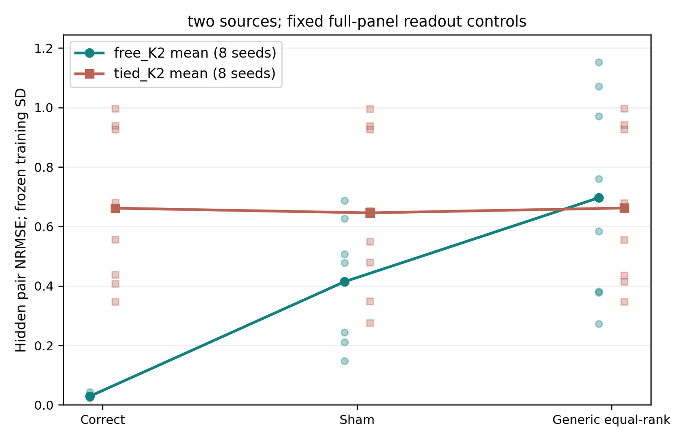
来源：synthetic_results.json
独立双源下，真实读出相对sham的隐藏误差收益为0.384931，区间[0.253724,0.507596]；相对generic收益0.667325，区间[0.448891,0.889624]。这排除了“相同loading秩和完整谱就保证同样预测”的错误推论，但由于生成器按真实读出构造，仍不能用它证明实测模板几何符合个体脑源。
代表窗口仅用于解释，不参与参数选择：subject_25/session_01/event0、subject_21/session_01/event4、subject_05/session_01/event0分别对应旧K2成功样本的较好、中间、困难误差，且来自不同被试。共同目标为FpzFp1 Hb对，完整隐藏；其他Hb供体和完整EEG可见。τ基准2 s，κ基准0.64 /s。横轴为基准倍数0.5至2，不是生理时间，也不是正常生理范围。每个节点独立重拟合驱动系数和初态，其他生理参数保持固定。
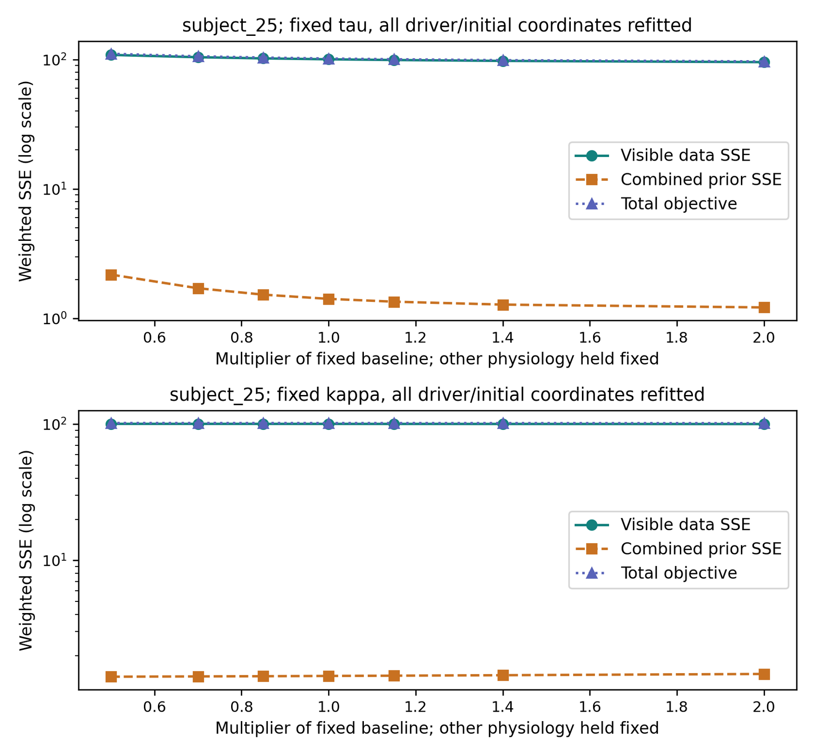
来源：profile_results.json; figures/report_figure_manifest.json
较好窗口中，τ从2 s增至4 s，总目标101.7721降至96.6458，Hb数据项11.3671降至6.7165，但隐藏NRMSE只从0.311304变为0.308222。κ从0.32至1.28 /s时总目标101.8360至101.5973，隐藏误差0.309814至0.314566。较低可见目标不提供真实τ、κ的依据。
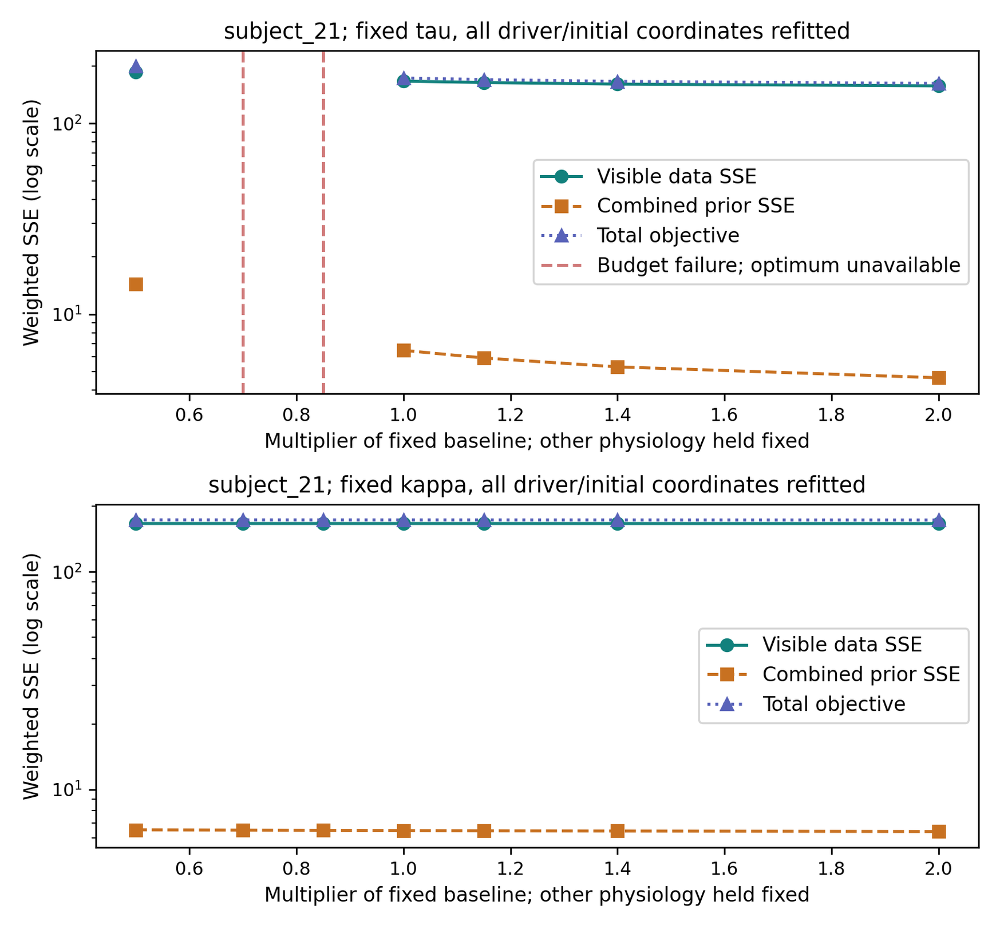
来源：profile_results.json; figures/report_figure_manifest.json
中间窗口中，τ从2 s增至4 s，总目标173.2598降至162.2417，隐藏误差反而从0.665324升至0.685197。τ=1.4与1.7 s两个节点耗尽评估预算，图中断线和红色标线保留失败。不能把失败的有限目标插入曲线当作有效profile，也不能把未收敛节点当成生理不可能。
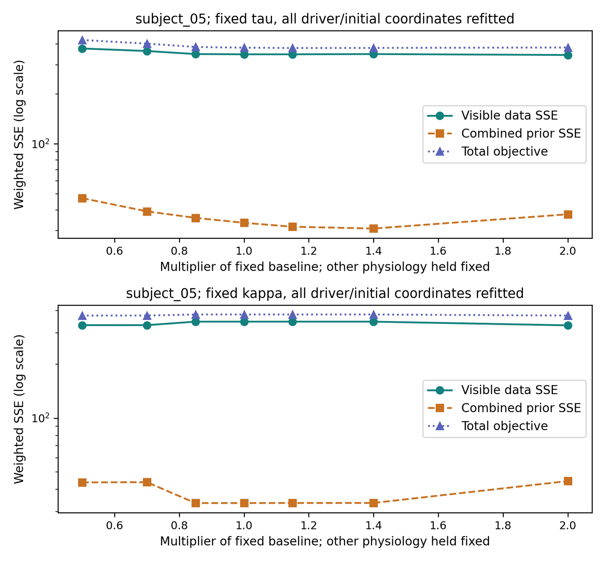
来源：profile_results.json; figures/report_figure_manifest.json
困难窗口的隐藏NRMSE约5.36至5.75，绝对重建质量已经不足。κ从0.448到0.544 /s时找到的目标从约374.975跳至380.058，κ=1.28 /s又到约374.891；这提示求解器在不同驻点分支上结束，不能将折线解释为平滑全局最优profile。当前结果只能展示条件拟合的多解/优化不稳定，不能据此给出可信生理参数点估计。
| 旧实测比较 | 候选NRMSE | 参考NRMSE | Δ | 95%描述区间 | 成功数 |
|---|---|---|---|---|---|
| K2真实 vs sham | 2.14783 | 2.60123 | 0.45341 | [-1.18316,2.02512] | 34/36 vs 31/36 |
| K2自由 vs 严格tied（固定权重1） | 2.14783 | 1.17090 | -0.97693 | [-2.13171,0.00049] | 34/36 vs 36/36 |
| K1 H4 vs H2 | 1.17161 | 1.24450 | 0.07289 | [-0.01944,0.18567] | 36/36 vs 36/36 |
| K1 E12 vs E6 | 1.17161 | 1.17161 | 0.00000 | [0.00000,0.00000] | 36/36 vs 36/36 |
| K1 vs joint ridge | 1.17161 | 0.99705 | -0.17456 | [-0.42445,-0.01807] | 36/36 vs 36/36 |
| K2 vs joint ridge | 2.14783 | 0.99705 | -1.15077 | [-2.28684,-0.06627] | 34/36 vs 36/36 |
重新从旧不可变cell记录汇总，6名被试等权，数值失败NMSE=100；本套件使用2000次bootstrap，因此区间端点与原报告1000次重采样不完全相同，均值相同。没有重新拟合或重选旧模型。
来源：retained_comparisons.json
实测严格free/tied对照的收益为-0.976933，区间[-2.131705,0.000493]，跨零；真实/sham对照也跨零。普通K2相对K1表现较差，且K1与K2都没有超过同输入joint ridge。因而当前公开面板不支持凭空间动态扩容或模板几何给模型加上生理来源标签。
这与新合成独立双源的强收益并不矛盾：合成给了正确的读出、固定生理参数、匹配的动态族和独立噪声；实测未保证这些条件，且校准驱动来自Hb条件估计。两种结果联合排除了“模型没有能力表达双源”和“表达双源就能保证实测有效”这两个极端说法。究竟是读出失配、共享驱动假设、背景成分还是先验错误，需由另外的受控实验分开，不能从本套件单独定因。
本套件支持三个相互独立的结论。第一，新增Hb供体能明显加强K2原有弱方向并改善匹配合成中的隐藏预测，即使数值秩此前已经满秩。第二，正确读出的优势依赖是否真正存在不同的动态轨迹；相同源的低秩时间激励下，一般等谱失配可以保留很好的输出。第三，低隐藏误差与准确驱动形状可以同时伴随绝对DC偏差，固定生理参数实验不能提供τ、κ恢复证据。
下一步优先验证具有不同混合/时间响应的独立观测，而不是仅增加相似EEG读出。对潜变量同时保留参考中心化形状、绝对偏移及初态诊断；若用途只需波形描述，应明确输出的是条件表征。任何准备解释为个体生理参数的模型，都需要套件一那样真正释放参数并使用非名义真值恢复与联合profile；实测阶段还需验证读出、背景成分和同步信息边界。
本研究只覆盖一个固定局部模型、一个既有公开开发面板和三个新合成机制。局部线性化、描述性小样本区间和选例profile不证明全局唯一解，也不证明物理反演普遍不可能。失败与负结果已保留，未通过重试预算或隐藏目标调参来改变结论。
src/inference/shared_driver_spatial.py
src/inference/observation_baselines.py
src/inference/t3a_balloon_robust_ssm.py
experiments/configs/physiology_semantic_tokenizer/shared_driver_spatial_v1.yaml
experiments/runs/physiology_semantic_tokenizer/shared_driver_spatial/20261020_synthetic_v1/summary.json
experiments/runs/physiology_semantic_tokenizer/shared_driver_spatial/20261020_measured_v2/summary.json
experiments/configs/physiology_semantic_tokenizer/spatial_information_v1.yaml
summary.json
plan.json
resolved_config.json
tasks/*.json
information_results.json
profile_results.json
synthetic_results.json
retained_comparisons.json
verification.json
figures/report_figure_manifest.json